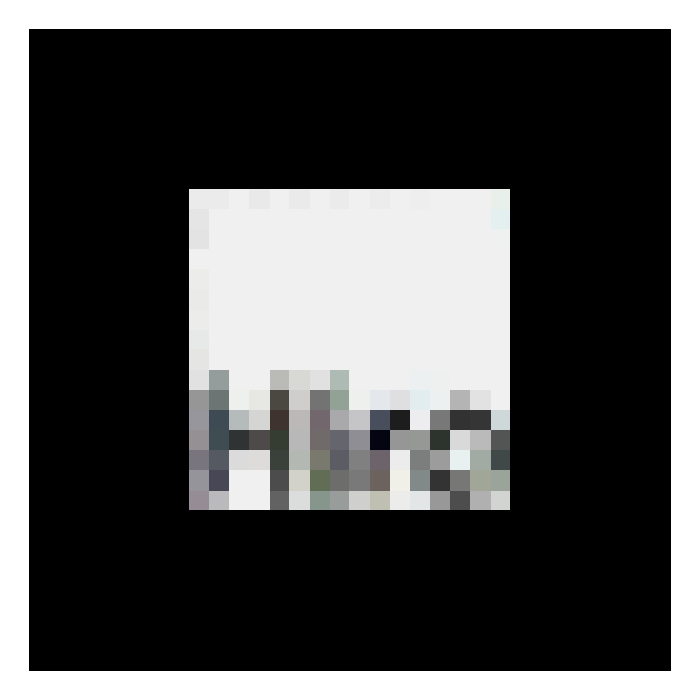
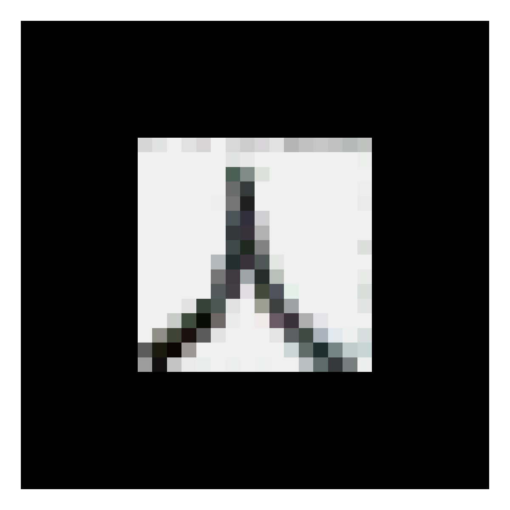

Print at 100% / Actual size — not “Fit to page”, which silently rescales and makes every measurement in the viewer wrong. Then check the ruler line below with a real ruler.
Print on plain white A4 at 100%. Keep them flat and unfolded.

Marker A — Rear-dump truck (140 mm)

Marker B — Hydraulic front shovel (140 mm)